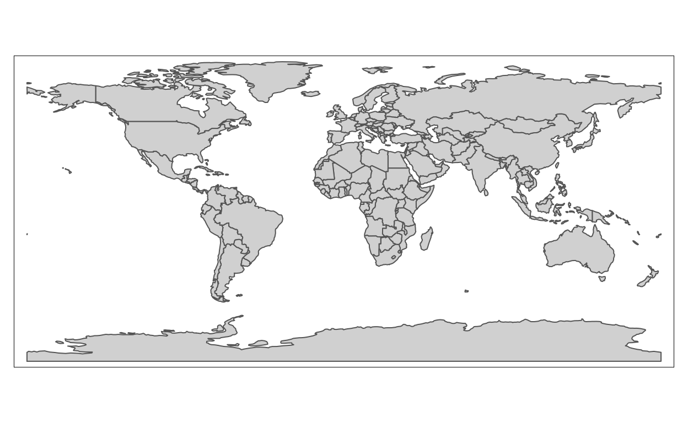

Welcome
In this tutorial, you will learn some basic steps to start working with (geo)-spatial data in R. I prepared this tutorial as a intuitive “hands on” introduction, but I provide links for those interested in more background and theory.
We will cover following steps :
- Creating a thematic map with vector data (shapes)
- Combining multiple layers from one or multiple shapes
- Switching between plot and interactive maps
Setup
I’ve preloaded the packages for this tutorial with
library(tmap)
library(sf)Throughout this tutorial we will be using the pipe operator,
%>%. You can use the pipe to rewrite multiple operations
in a way that you can read left-to-right, top-to-bottom. We’ll use
piping frequently because it considerably improves the readability of
code. The pipe is a defining feature of the tidyverse, so we will load
this set of packages as well.
library(tidyverse)The tidyverse package also includes ggplot2, which allow
us to create static maps in a similar modular fashion, but using the
+ operator instead of the pipe.
For this tutorial we will use the World,
metro and other data sets from package tmap.
These data sets are documented in help(package=tmap).
Examples in this tutorial are based on:
Tennekes, M. (2018). tmap: Thematic Maps in R. Journal of Statistical Software, 84(6), 1–39. DOI:10.18637/jss.v084.i06
A glimpse into the spatial data
We can load the data like this:
data("World", "metro", package = "tmap")These datasets are loaded as simple feature (or sf)
objects.
World dataset
The World dataset includes general information about countries. You
get a summary of the object attributes when you use the function
print. This will include the geometry type, bounding box
and Coordinate Reference System (CRS), followed by the data columns and
the geometry column, usually at the end of the table.
print(head(World))## Simple feature collection with 6 features and 15 fields
## Geometry type: MULTIPOLYGON
## Dimension: XY
## Bounding box: xmin: -73.41544 ymin: -55.25 xmax: 75.15803 ymax: 42.68825
## Geodetic CRS: WGS 84
## iso_a3 name sovereignt continent
## 1 AFG Afghanistan Afghanistan Asia
## 2 AGO Angola Angola Africa
## 3 ALB Albania Albania Europe
## 4 ARE United Arab Emirates United Arab Emirates Asia
## 5 ARG Argentina Argentina South America
## 6 ARM Armenia Armenia Asia
## area pop_est pop_est_dens economy
## 1 652860.00 [km^2] 28400000 43.50090 7. Least developed region
## 2 1246700.00 [km^2] 12799293 10.26654 7. Least developed region
## 3 27400.00 [km^2] 3639453 132.82675 6. Developing region
## 4 71252.17 [km^2] 4798491 67.34519 6. Developing region
## 5 2736690.00 [km^2] 40913584 14.95003 5. Emerging region: G20
## 6 28470.00 [km^2] 2967004 104.21510 6. Developing region
## income_grp gdp_cap_est life_exp well_being footprint inequality
## 1 5. Low income 784.1549 59.668 3.8 0.79 0.4265574
## 2 3. Upper middle income 8617.6635 NA NA NA NA
## 3 4. Lower middle income 5992.6588 77.347 5.5 2.21 0.1651337
## 4 2. High income: nonOECD 38407.9078 NA NA NA NA
## 5 3. Upper middle income 14027.1261 75.927 6.5 3.14 0.1642383
## 6 4. Lower middle income 6326.2469 74.446 4.3 2.23 0.2166481
## HPI geometry
## 1 20.22535 MULTIPOLYGON (((61.21082 35...
## 2 NA MULTIPOLYGON (((16.32653 -5...
## 3 36.76687 MULTIPOLYGON (((20.59025 41...
## 4 NA MULTIPOLYGON (((51.57952 24...
## 5 35.19024 MULTIPOLYGON (((-65.5 -55.2...
## 6 25.66642 MULTIPOLYGON (((43.58275 41...Metro dataset
The metro dataset includes information about population size in large cities around the world. It includes a population times series from 1950 to (forecasted) 2030. All metro areas with over 1 million inhabitants in 2010 are included.
Functions like str or glimpse (from the
tidyverse library) will give summaries of the data
component but supress part of the spatial attributes.1
glimpse(metro)## Rows: 436
## Columns: 14
## $ name <chr> "Kabul", "Algiers", "Luanda", "Buenos Aires", "Cordoba", "Ro…
## $ name_long <chr> "Kabul", "El Djazair (Algiers)", "Luanda", "Buenos Aires", …
## $ iso_a3 <chr> "AFG", "DZA", "AGO", "ARG", "ARG", "ARG", "ARM", "AUS", "AUS…
## $ pop1950 <dbl> 170784, 516450, 138413, 5097612, 429249, 554483, 341432, 429…
## $ pop1960 <dbl> 285352, 871636, 219427, 6597634, 605309, 671349, 537759, 571…
## $ pop1970 <dbl> 471891, 1281127, 459225, 8104621, 809794, 816230, 778158, 85…
## $ pop1980 <dbl> 977824, 1621442, 771349, 9422362, 1009521, 953491, 1041587, …
## $ pop1990 <dbl> 1549320, 1797068, 1390240, 10513284, 1200168, 1083819, 11745…
## $ pop2000 <dbl> 2401109, 2140577, 2591388, 12406780, 1347561, 1152387, 11113…
## $ pop2010 <dbl> 3722320, 2432023, 4508434, 14245871, 1459268, 1298073, 10655…
## $ pop2020 <dbl> 5721697, 2835218, 6836849, 15894307, 1562509, 1453814, 10237…
## $ pop2030 <dbl> 8279607, 3404575, 10428756, 16956491, 1718192, 1606993, 1057…
## $ geometry <POINT [°]> POINT (69.17246 34.52889), POINT (3.04197 36.7525), PO…
## $ growth <dbl> 5.3713195, 1.6578585, 5.1645760, 1.1571325, 0.7074848, 1.199…If you get a warning about an ‘incorrect crs object detected’, you can fix this with:
st_crs(metro) = "EPSG:4326"↩︎
Modifying the dataset
We can perform normal operations in a spatial dataset. For example
creating new columns based on existing columns using mutate
(from tidyverse library).
For each city we have several measures or estimates of population size for each decade. Let’s calculate the growth between 2010 and 2020 and select the city with the largest growth.
metro <-
metro %>%
mutate(growth = (pop2020 - pop2010)/(pop2010 * 10) * 100)
metro %>% arrange(desc(growth)) %>% slice(1)Let’s choose a projection
The dataset World includes country boundaries. We can plot them using a tandem of functions:
tm_shape: Creates a tmap-element that specifies a spatial data object, which we refer to as shape. It is possible to use multiple shape objects within one plot (see tmap-element).tm_polygonsfills the polygons and draws the polygon borders defined in the active shape.
tm_shape(World) +
tm_polygons()
Our map is using ‘rectangular’ or ‘unprojected’ coordinates, also known as ‘Plate Carrée’ projection, which is not recommended for world representations.
We can set up a better projection using the aptly namedprojection argument to tm_shape. tmap
recognises many ways to declare the projection, we will use here PROJ
strings (see the online
documentation). Start with the Robinson projection by clicking the
run buttom, look at the resulting map and compare with the one above,
how does it looks?.
tm_shape(World, projection = '+proj=robin') +
tm_polygons()Now, you can change the value of the string to other projections and click on the run button again to see how the world instatntly changes.
| Name | PROJ string |
|---|---|
| Robinson | +proj=robin |
| Lambert cylindrical equal-area | +proj=cea |
| Gall-Peters | +proj=cea +lat_ts=45 |
| Rectangular Polyconic | +proj=rpoly |
| Eckert IV | +proj=eck4 |
| Equal earth | +proj=eqearth |
Now that we have a basic understanding of the data at hand, let’s use this information to create thematic maps.
A first thematic map
A thematic map is a map that displays or visualises some aspects of the data, not just the spatial boundaries. We have seen that the World dataset includes multiple columns with information for each country.
Run this code to create your first thematic map:
tm_shape(World,projection='+proj=robin') +
tm_polygons(
col = "income_grp",
palette = "-Blues",
contrast = 0.7,
border.col = "gray30")You can replace “income_grp” with other categorical variables in your dataset and click the run button again to create a different view of your dataset.
What about quantitative variables ?
Functions in tmap will usually find a way to display
quantitative data, but sometimes default parameters will not be
sufficient for data with large ranges or skewed distributions.
For example, the population estimates do not look good with the defaults. Try defining breaks, or changing the style parameter (or both), and see how the plot improves.
tm_shape(World,projection='+proj=robin') +
tm_polygons(
col = "pop_est",
palette = "-Blues",
#style = "log10_pretty",
#breaks = c(0,1^6,10^7,10^8,10^10),
contrast = 0.7,
border.col = "gray30")Title for the legend
You can use the parameter title to customise your
legend:
tm_shape(World,projection='+proj=robin') +
tm_polygons("income_grp", palette = "-Blues",
title = "Income class", contrast = 0.7, border.col = "gray30",
id = "name") 
Great! we created a thematic map displaying information from one
variable in our dataset. Often we want to combine multiple layers to be
able to see connections between our variables. In the next section we
will see how to make this work with tmap.
Adding layers to the map
Now that we have created a simple thematic map, we can start adding layers to it.
There are many tm_* functions to explore different ways
to visualise the data. We will explore some of them.
Multiple layers from the same shape
tm_polygons adds polygons from the previously declared
shape. Now, let’s use tm_text to add labels to the
polygons.
tm_shape(World,projection='+proj=robin') +
tm_polygons("income_grp", palette = "-Blues",
title = "Income class", contrast = 0.7, border.col = "gray30",
id = "name") +
tm_text("iso_a3", size = "AREA", col = "gray30", root = 3)tm_bubbles works with point data, let’s try it on our
metro dataset. We can also add tm_text here, but need to
choose a very small font size to avoid crowding the plot area. This is
obviously not optimal, but we will tackle this later.
tm_shape(metro) +
tm_bubbles(size = "pop2010", col = "pop2010",
border.col = "black", border.alpha = 0.5,
palette = "-RdYlGn",
title.size = "Metro population (2010)",
title.col = "Metro population (2010)") +
tm_text("name", size = 0.3, col = "gray30")Multiple layers from multiple shapes
tmap will let us add multiple shapes, each with one or
more layers. Let’s try it out, just combine the lines of code above and
try to create your own combination.
tm_shape(___) +
____ +
tm_shape(___) +
____This looks nice! Our map is loaded with information, but the world is a big place, and the details are sometimes hidden in tiny places. How can we dive into the map and explore every corner of it?
In the next section we will turn this static plot into an awesome interactive map!
Interactive maps
The same map that we created above can be turned into an interactive
map by changing tmap_mode from plot to
view.
Create your map
First we will combine the layers that we need and assign this to
my_map. We will add one polygon and one text layer from the
World shape, and one bubble layer from the metro shape.
my_map <- tm_shape(World,projection='+proj=robin') +
tm_polygons("income_grp", palette = "-Blues",
title = "Income class", contrast = 0.7, border.col = "gray30",
id = "name") +
tm_text("iso_a3", size = "AREA", col = "gray30", root = 3) +
tm_shape(metro) +
tm_bubbles("pop2010", col = "growth",
border.col = "black", border.alpha = 0.5,
breaks = c(-Inf, 0, 2, 4, 6, Inf), palette = "-RdYlGn",
title.size = "Metro population (2010)",
title.col = "Annual growth rate (%)", id = "name",
popup.vars = c("pop2010", "pop2020", "growth")) Notice that we added the id and popup.vars
parameters. These will come in handy for interactive visualisation.
plot mode
If we turn on the plot mode, the output will be the same
as in previous examples, an static plot.
tmap_mode("plot")## tmap mode set to plottingmy_map## Variable(s) "growth" contains positive and negative values, so midpoint is set to 0. Set midpoint = NA to show the full spectrum of the color palette.view mode
But turning on the view mode offers us a fully
functional and interactive leaflet map in our viewer.
tmap_mode("view")
my_mapYou can zoom and pan your view, and select layers to display in your
map, if you click on the features (polygons or points) you will see the
id and the variables used for plotting or defined in the
popup.vars parameter.
That’s it from me!
We just learned to create thematic maps with vector data in
tmap, combining multiple layers from one or multiple shapes
and switching between static plot and interactive maps.
tmap includes many layers, functions and features that
can help you create beautiful maps for your presentations and
publications. You can get inspired by this final example:
data("land", "rivers", package = "tmap")
m2 <- tm_shape(land) +
tm_raster("elevation", breaks = c(-Inf, 250, 500, 1000, 1500, 2000, 2500, 3000, 4000, Inf),
palette = terrain.colors(9), title = "Elevation (m)") +
tm_shape(rivers) +
tm_lines("lightblue", lwd = "strokelwd", scale = 1.5, legend.lwd.show = FALSE) +
tm_shape(World, is.master = TRUE,projection = "+proj=eck4") +
tm_borders("grey20", lwd = .5) +
tm_grid(projection = "+proj=longlat", labels.size = 0.4, lwd = 0.25) +
tm_text("name", size = "AREA") +
tm_compass(position = c(0.08, 0.45), color.light = "grey90", size = 3) +
tm_credits("Eckert IV projection", position = c("RIGHT", "BOTTOM")) +
tm_style("classic",
bg.color = "lightblue",
space.color = "grey90",
inner.margins = c(0.04, 0.04, 0.03, 0.02),
earth.boundary = TRUE) +
tm_legend(position = c("left", "bottom"),
frame = TRUE,
bg.color = "lightblue")
tmap_mode("plot")## tmap mode set to plottingm2I hope this has been useful and you feel more confident to start working with geo-spatial data in R.
Keep exploring the world!